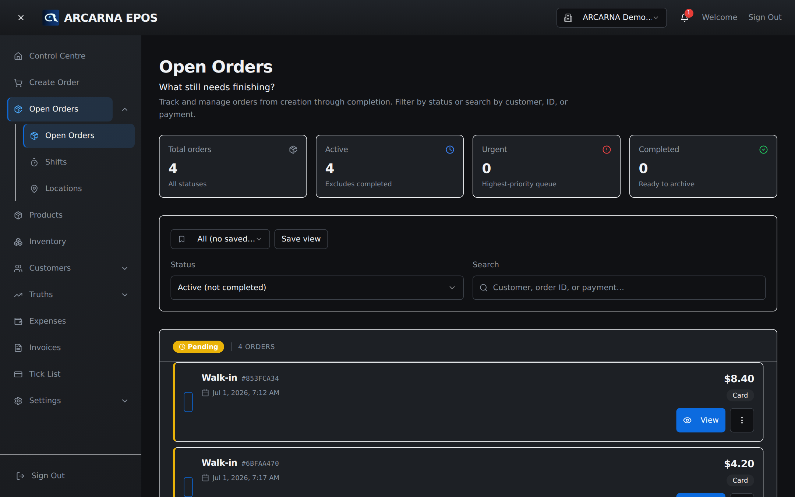
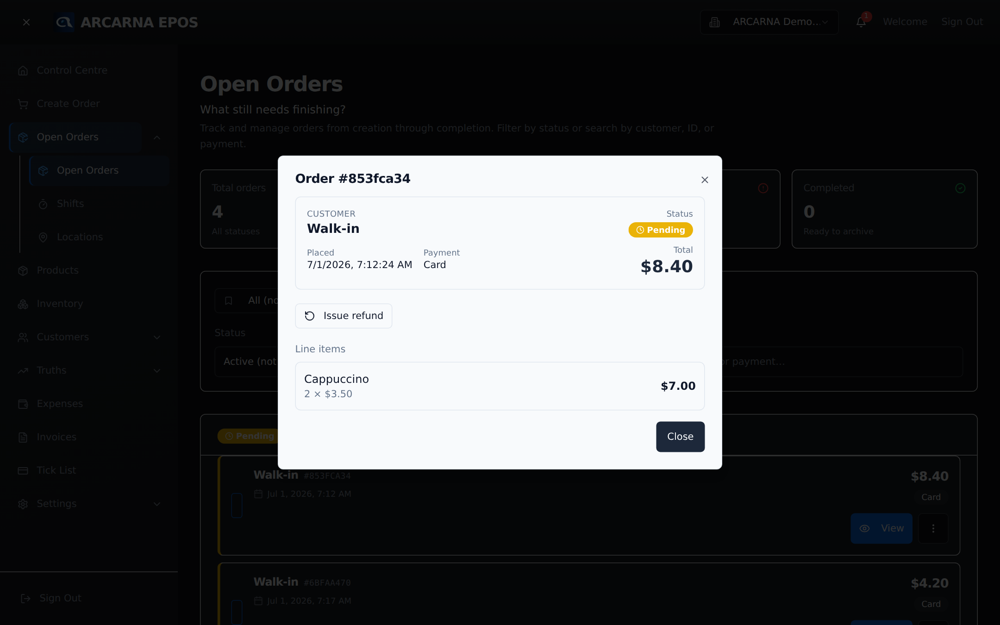
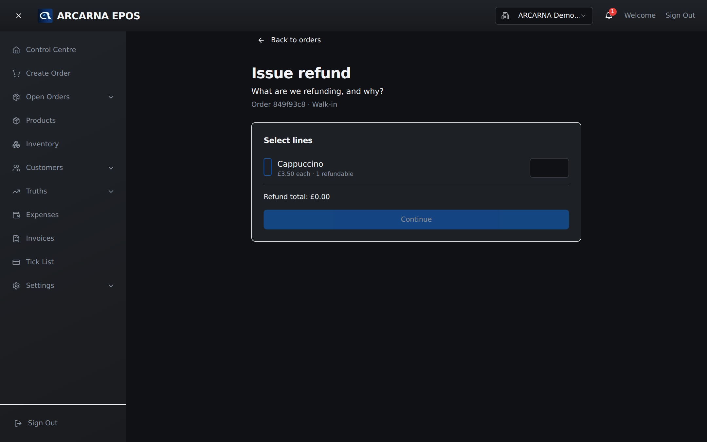
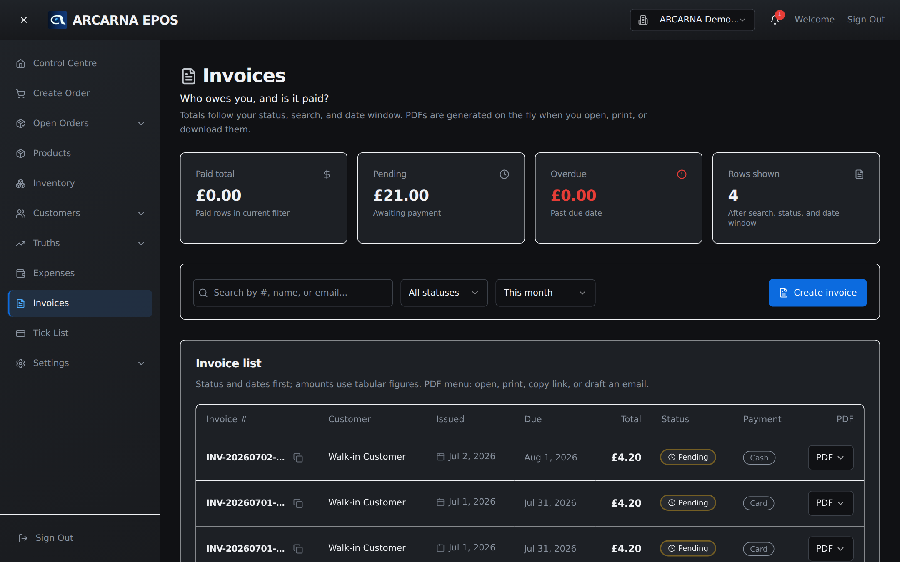

Staff training manual
Staff training manual
Once an order is taken it lives on the Open Orders screen. This is where you check where each order stands, move it along, refund it, and send the customer their invoice.
What this screen is for
Open Orders — the work still on the go
Creating an order (Section 3) is only the first step. Some orders are paid and done in seconds; others wait — for stock, for a customer to collect, for a payment to clear. Open Orders is the single list of everything in progress, so nothing is forgotten. It answers one question: what still needs finishing?
Everyone can open this screen and read it. What you can change depends on your role: CASHIER MANAGER
| Task | Who can do it |
|---|---|
| View orders and their detail | CASHIER MANAGER |
| Change an order's status | CASHIER MANAGER |
| Edit an order's lines (quantities, prices) | MANAGER |
| Refund an order | MANAGER |
| Delete an order | MANAGER |

Reading the screen
Four count tiles sit across the top so you can see the shape of the day at a glance.
| Tile | What it counts |
|---|---|
| Total orders | Every order, whatever its status. |
| Active | Orders that are not yet completed — the ones that still need work. |
| Urgent | Orders flagged as the highest priority. Clear these first. |
| Completed | Finished orders, ready to be set aside. |
Below the tiles, the orders themselves are grouped under their status, with the most pressing groups first. Each row shows the customer name (or Walk-in), a short order number, when it was placed, the total and how it was paid. The list refreshes on its own every few seconds, so a colleague's change on another till appears without you reloading.
What each status means
| Status | Plain meaning |
|---|---|
| Pending | Taken, but not yet finished — the normal starting point. |
| On hold | Paused for now, e.g. waiting on stock or a decision. |
| Awaiting customer | Ready — waiting for the customer to collect or reply. |
| Urgent | Needs attention ahead of everything else. |
| Completed | Done and handed over. Nothing more to do. |
Finding one order
Filtering and searching
On a busy day the list is long. Two controls narrow it down.
- Use the Status menu to choose which orders to show — for example Active (not completed), Completed only, Urgent only, On hold or Awaiting customer. It opens on Active so completed orders stay out of your way.
- Type in the Search box to match by customer name, order number, or payment method. The list filters as you type.
- Set up a filter you use often? Save it as a view from the selector above the filters, and it will be there next time.
Looking inside an order
Opening an order to see its detail
Select View on any row to open the order's detail. This is a read-only summary — safe to open at any time.
| Part | What it shows |
|---|---|
| Customer | Who the order is for, or Walk-in if none was attached. |
| Placed & payment | When the order was taken and how it was paid. |
| Status & total | Its current status and the amount, e.g. £42.50. If any money has been refunded, the refunded amount shows here too. |
| Line items | Each product on the order — quantity, unit price and line total. |
| Timeline | Appears once an order has been refunded: when it was created and each refund since, with who did it. |
| Bank details & collection | Shown when your shop has them set — handy for bank-transfer or collection orders. The small copy button beside a value copies it to the clipboard. |
From this detail view a manager can also start a refund — see below. Select Close when you are done; viewing changes nothing.

Moving an order along
Updating the status
Changing the status is how you move an order through the day — from Pending to Completed, or onto On hold while you wait for something. CASHIER MANAGER Both cashiers and managers can do this.
- Find the order and select the More actions button (the three dots) on its row.
- Choose Update status.
- Pick the new status from the menu and select Update status to confirm.
The list updates straight away. If the connection drops mid-shift, the change is queued on the device and syncs when you are back online — you will see a note that the update was saved offline.
Manager tasks
Editing and deleting an order
Correcting the contents of an order, or removing it entirely, is a MANAGER job. These actions change what was sold and can release stock, so they sit behind the manager role. A cashier who needs one of these should ask a manager.
Editing the lines
Use Edit order from the row's More actions menu to change quantities or unit prices, or to remove a line the customer no longer wants. The new total recalculates as you type. Remove a line only if you truly mean to drop that item. Save with Save changes. If the edit affects stock, arcarna may warn you and adjust the order's status.
Deleting an order
Deleting is permanent and cannot be undone. Use it only for orders taken in error — not for cancellations or returns, which should be refunded instead so the record stays honest.
Giving money back
Refunding an order
A refund returns money for some or all of an order — a damaged item, the wrong product, or a change of mind. Refunding is a MANAGER task, and it keeps a full record, so always refund rather than quietly deleting. Open the order with View, then select Issue refund.

The refund runs in three short steps.
- Select lines. Tick each item you are refunding and set the quantity. Each line shows how many are still refundable, so you cannot refund more than was sold or refund the same item twice. The Refund total adds up as you go. Select Continue.
- Reason & method. Choose why (see below) and how the money goes back, add any Notes, then select Review.
- Confirm. Check the amount, method and reason, then select Confirm refund. You return to the order, and the refund now appears on its timeline.
Reasons
| Reason | When to use it |
|---|---|
| Damaged | The item arrived or was found damaged. |
| Wrong item | The customer received the wrong product. |
| Customer changed mind | A return with nothing wrong with the goods. |
| Defect | The item is faulty. |
| Other | Anything else — add a note so the record is clear. |
Methods
| Method | What it means |
|---|---|
| Original | Back to how the customer paid — the usual choice. |
| Cash | Cash from the till. |
| Store credit | Credit for the customer to spend later. |
The paperwork
Invoices
An invoice is the formal record of a sale — the document a customer keeps for their accounts. The Invoices screen lists them all and answers: who owes you, and is it paid? The PDF for each invoice is produced on the spot when you open, print, download or email it, so it is always up to date.

Finding an invoice
Four tiles summarise the invoices currently shown: Paid total, Pending, Overdue and Rows shown. Narrow the list with the search box (by invoice number, customer name or email) and the two menus — a status filter (Paid, Pending, Overdue) and a date window (Today, This week, This month or All dates). The totals always match whatever the filters are showing.
Viewing, downloading and emailing a PDF
Each row has a PDF menu with everything you need to hand the invoice over.
| Choice | What it does |
|---|---|
| Open | Opens the invoice PDF in a new tab to read on screen. |
| Opens the PDF and starts your browser's print dialog. | |
| Download | Saves the PDF to the device as invoice-number.pdf. |
| Downloads the PDF and opens a pre-written email to the customer. Attach the file that just downloaded, then send. |